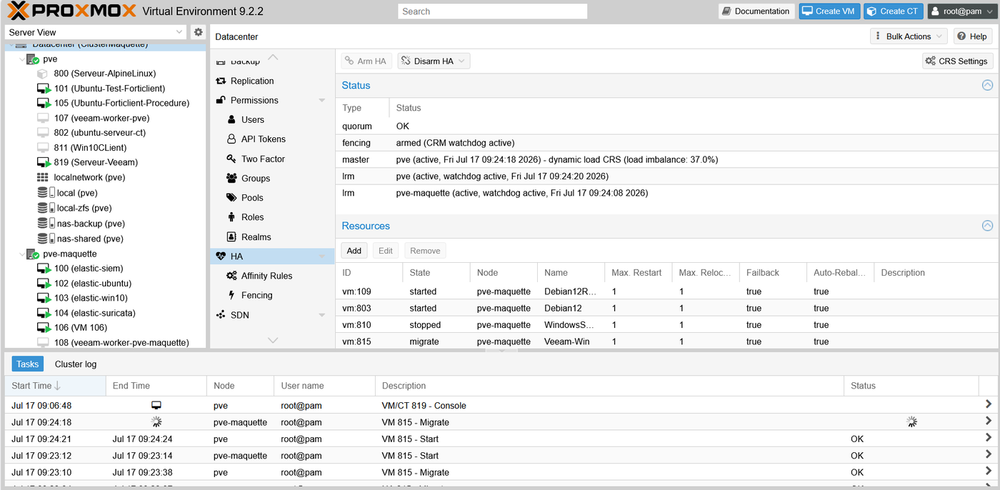
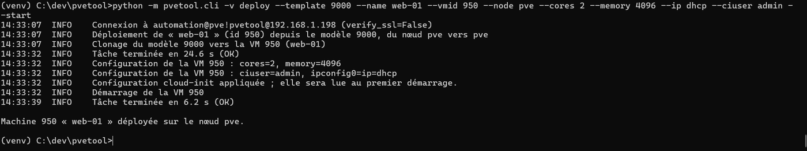
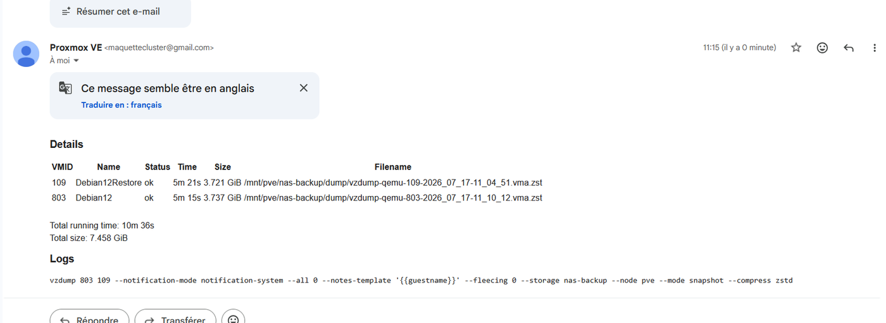

Étudiant en BUT Réseaux & Télécommunications à l'IUT de Colmar, parcours Développement Système & Cloud. Ce portfolio documente mes cinq compétences à travers mes SAÉ, mes projets et mon stage de 2e année chez NXO.
Après un Bac STMG, j'ai rejoint le BUT Réseaux & Télécommunications à Colmar pour transformer une curiosité technique en compétences concrètes. En 2e année, j'ai choisi le parcours Développement Système & Cloud (DevCloud) : un terrain qui réunit ce qui m'attire le plus — l'administration réseau, la virtualisation, la conteneurisation et le développement d'applications distribuées.
Mon fil conducteur cette année : passer d'un réseau « qui marche » à un système conçu pour tenir la charge, la panne et l'évolution — du LAN commuté jusqu'au microservice déployé en environnement virtualisé.
Intégrateur réseau et télécoms du groupe Fayat, site de Wittelsheim. Mission : concevoir, déployer et recetter une maquette d'infrastructure virtualisée en cluster, destinée à préfigurer une mise en production.
Un cluster de deux nœuds ne suffit pas : à deux votants, la perte d'un serveur paralyse le survivant. J'ai ajouté un troisième vote porté par le NAS, puis provoqué délibérément la panne d'un nœud pour vérifier que les machines protégées redémarraient bien de l'autre côté.
Le cluster mesure aussi lui-même son déséquilibre de charge : j'ai observé une migration décidée sans mon intervention, ramenant l'écart de 37 % à 33 %.

L'interface web convient à l'administration ponctuelle, pas aux gestes répétés. J'ai écrit un outil en Python qui parle à l'API de Proxmox : inventaire, déploiement de machines depuis un modèle, cycle de vie, sauvegarde et rapport d'exploitation.
Une commande remplace plusieurs minutes de manipulations — et une boucle de trois lignes déploie une série entière de machines identiques.

Une sauvegarde dont personne ne vérifie le résultat n'est pas une sauvegarde. Ce volet ne figurait pas dans la commande initiale ; il m'a semblé nécessaire de l'ajouter.
Chaque exécution planifiée envoie désormais un compte rendu par courriel : machines traitées, durée, volume, statut. Le rapport d'exploitation que j'ai écrit a par ailleurs révélé douze machines sans aucune sauvegarde sur le stockage analysé.

En cours, une manipulation réussie clôt le travail. Ici, elle le commençait : il fallait ensuite prouver que ça fonctionnait, dans quelles conditions, et jusqu'où. Le cahier de recette — 46 tests, tous conformes — m'a appris à transformer une intuition en question à laquelle on répond par oui ou par non.
J'y ai joint neuf points de vigilance : les limites rencontrées et les écarts aux préconisations de l'éditeur. Signaler ce qui ne fonctionne pas est plus utile, pour qui reprendra le dossier, que de ne présenter que ce qui marche.
Chaque compétence est documentée selon la même logique : contexte, traces et preuves, SAÉ/projet rattaché, et une réflexivité sur ce que j'en retire et sais désormais généraliser.
Concevoir un LAN hiérarchique et déployer les services qui le rendent opérationnel : DNS, Web, mail, annuaire, haute disponibilité.
Ouvrir la fiche →Interconnecter des sites distants via une offre opérateur MPLS-VPN, et raccorder des usagers jusqu'à la prise intelligente.
Ouvrir la fiche →Développer des outils réseau : un routage en oignon avec une implémentation RSA codée à la main et une supervision graphique.
Ouvrir la fiche →Bâtir et exploiter une infrastructure virtualisée : cluster à haute disponibilité, stockage partagé, conteneurisation et services reproductibles.
Ouvrir la fiche →Concevoir une application en architecture microservices — découpage en API indépendantes, communication inter-services et journalisation.
Ouvrir la fiche →Le contrat pédagogique demande de mettre les compétences acquises en stage « en perspective avec celles définies dans le programme national du BUT R&T ». Voici la correspondance ; chaque fiche la détaille avec ses preuves.
Mes compétences s'appuient sur des situations d'apprentissage et d'évaluation concrètes, menées seul ou en équipe.
Architecture complète de deux entreprises e-commerce sur 3 sites : LAN commuté hiérarchique, services réseau (DNS, Web, mail, AD) et interconnexion opérateur MPLS-VPN. Mon rôle : la mise en œuvre des services réseau.
Réseau de routeurs virtuels permettant une communication anonyme par chiffrement en couches. Implémentation RSA « maison » (sans librairie crypto), architecture distribuée et interface de supervision.
Mise en place d'une infrastructure virtualisée hébergeant des services mutualisés — socle de la démarche cloud et de l'orchestration modulaire.
Application de gestion bancaire découpée en microservices : API d'authentification, opérations clients, validation par agent et journalisation via un service de messagerie.
Mise en œuvre d'un système de transmission autour d'une prise connectée — chaîne de transmission de bout en bout, du capteur à l'usager.
Transformation d'un Raspberry Pi en passerelle de sécurité isolant un réseau local : filtrage avancé avec iptables/nftables et serveur OpenVPN pour un accès distant sécurisé avec monitoring du trafic.
Conception et déploiement d'une maquette Proxmox VE en cluster chez NXO Telecom (groupe Fayat) : haute disponibilité, stockage NAS externe, segmentation VLAN et étude de compatibilité Veeam. 46 tests de recette conformes et 16 livrables documentaires produits.
Ce que je cherche pour le stage long de 3e année, et les entreprises que je vise en conséquence.
Mon stage de 2e année a confirmé une orientation : je veux travailler sur l'infrastructure et son exploitation — virtualisation, stockage, haute disponibilité, sauvegarde — plutôt que sur le développement applicatif seul.
Je vise un stage où l'on m'aura confié un périmètre technique réel, avec de l'automatisation à la clé : administration d'un parc virtualisé, déploiement automatisé, ou exploitation d'une infrastructure cloud ou hébergée.
Intégrateur réseau et télécoms du groupe Fayat, où j'ai réalisé mon stage de 2e année à Wittelsheim. Contact professionnel maintenu avec mon tuteur. Candidature prioritaire : la connaissance mutuelle est acquise et la maquette Proxmox que j'ai livrée appelle une suite (passage en production, extension à un troisième nœud).
Prestataire informatique du Grand Est (Strasbourg, Colmar, Mulhouse, Metz, Nancy) proposant de l'hébergement et du cloud privé en plus de l'infogérance de parcs clients. Le profil correspond directement à ce que j'ai pratiqué : infrastructures virtualisées, stockage, sauvegarde externalisée — avec l'exposition à plusieurs environnements clients en plus.
Hébergeur strasbourgeois installé depuis 2002, exploitant serveurs dédiés et infrastructures mutualisées en datacenter, avec sauvegarde externalisée sur site distant. Une structure où l'infrastructure est le métier : le terrain le plus direct pour approfondir virtualisation, stockage et continuité de service à l'échelle.
Société de services alsacienne intervenant de l'étude à la mise en œuvre d'infrastructures cloud privées, avec duplication des sauvegardes entre datacenters régionaux. Le cycle complet — concevoir, déployer, exploiter — est celui que j'ai suivi en maquette chez NXO, ici appliqué à des clients réels.
Le bassin Mulhouse–Colmar concentre des sites industriels exploitant leur propre parc virtualisé en interne, avec des contraintes de continuité de service fortes — un arrêt de production coûte immédiatement. Contexte très proche de celui que j'ai connu, où la haute disponibilité n'est pas un exercice mais une nécessité.
OVHcloud, Scaleway, Outscale : les acteurs français du cloud offrent une échelle et une profondeur technique qu'aucune structure régionale ne peut proposer. Candidature d'ouverture, motivée par l'envie de voir comment les mécanismes que j'ai manipulés sur deux nœuds se comportent sur des milliers.
Démarche engagée — candidatures spontanées ciblées dès la rentrée de septembre, en priorité sur l'axe Colmar – Mulhouse – Strasbourg, avec ouverture nationale pour les opérateurs cloud. Le présent portfolio et mes dépôts publics servent de support de candidature.
Critère de sélection — je privilégie les structures où l'infrastructure est exploitée en interne plutôt que sous-traitée : c'est la condition pour qu'un stagiaire touche réellement à la virtualisation, au stockage et à la sauvegarde, au lieu de se limiter au support utilisateur.
Disponible en français et en anglais.
Étudiant en 2e année de BUT Réseaux & Télécommunications, parcours Développement Système & Cloud. Je conçois, déploie et supervise des infrastructures réseau et des services distribués, du LAN commuté jusqu'au microservice virtualisé. Expérience professionnelle en virtualisation d'entreprise : cluster Proxmox VE à haute disponibilité, stockage partagé et sauvegarde.
CCNA 1 (Netacad, 2025) · Linphone (2025)
Français (natif) · Anglais (B1) · Allemand (B1)
Second-year student in a French Networks & Telecommunications degree (BUT R&T), Systems & Cloud Development track. I design, deploy and monitor network infrastructures and distributed services — from switched LANs to virtualized microservices. Professional experience in enterprise virtualization: high-availability Proxmox VE cluster, shared storage and backup.
CCNA 1 (Netacad, 2025) · Linphone (2025)
French (native) · English (B1) · German (B1)
Disponible pour échanger autour du réseau, du cloud et du développement système.